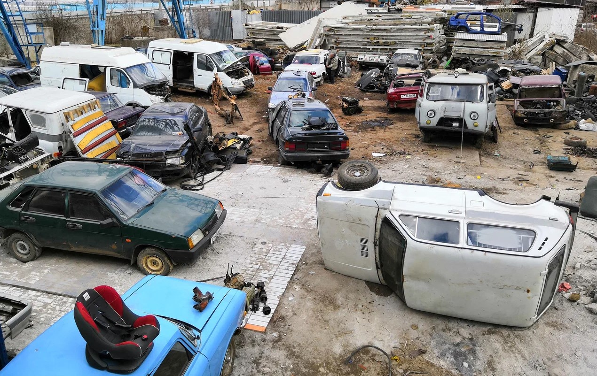

Депутат от Единой России, член комитета Госдумы по транспорту и развитию транспортной инфраструктуры, Александр Толмачёв предлагает разбирать утилизированные автомобили на запчасти.
Полученные при разборке детали будут восстанавливать и использовать повторно.
Депутат предлагает создать целую индустрию восстановления автозапчастей и соединить её с государственной программой по утилизации автомобилей.
По его мнению, при существующем дефиците автозапчастей целесообразно не утилизировать автомобили полностью, а использовать от них детали и компоненты.